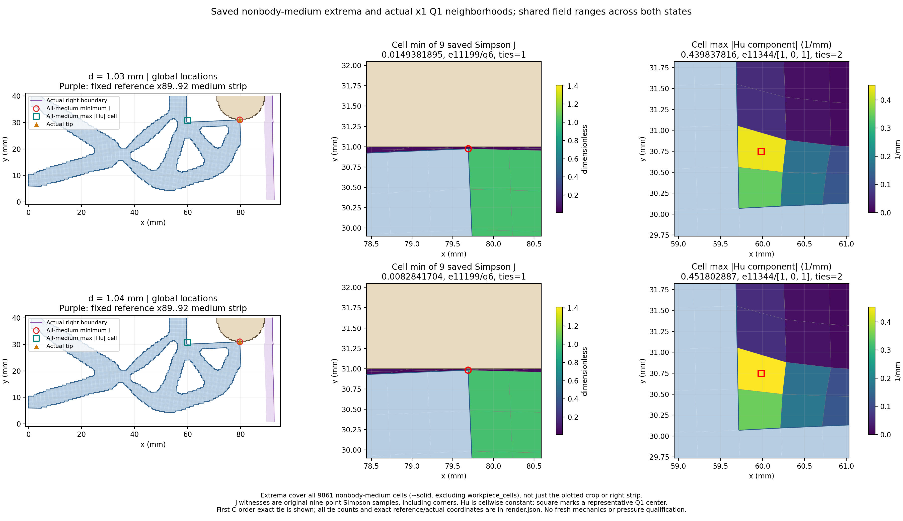

只修正LOCAL1介质图顶部布局。同两态、同源数据、相同位置/坐标范围/色标/颜色；原LOCAL1视觉失败与全部历史保留。保持原物理、验收门和资格，无新F/T/HP或平衡求解。
| d (mm) | R input (N) | tip distance (micrometers) | medium min J | medium max |Hu| (1/mm) | body Fy total/material/Hu (N) |
|---|---|---|---|---|---|
| 1.03 | 0.185699575 | 25.985909 | 0.0149381895254 | 0.439837816292 | 0.0077987359075 / 0.00367420867175 / 0.00412452723575 |
| 1.04 | 0.188497438 | 19.130670 | 0.00828417040294 | 0.451802886616 | 0.00885936998869 / 0.0045643384771 / 0.00429503151159 |
覆盖全部9861个非工件介质单元。J为原九点Simpson值（含角点），Hu逐单元常值；保留首个C-order精确并列见证与数量。局部图只裁剪显示；数据、两态共同坐标范围与色标均与LOCAL1原记录精确对账。

原值、身份、位置及布局修订JSON | tip | reaction | convergence
tip链接继承已通过的LOCAL1实际×1等比例近景，本轮未读取或重绘旧图。反力与收敛图也仅链接。下半域signed工件力含Hu贡献、不翻倍；q_out是端口位移而非gap，不增加压力、有效夹持、释放/稳定性、网格/域宽收敛或HF5资格。